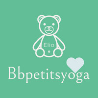
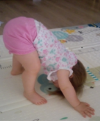
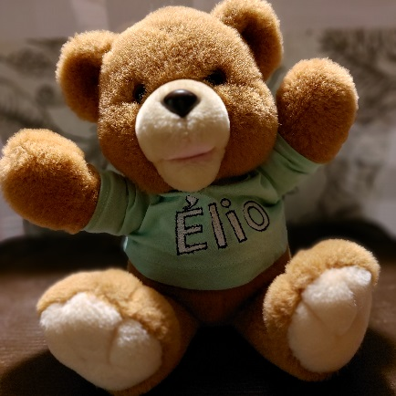
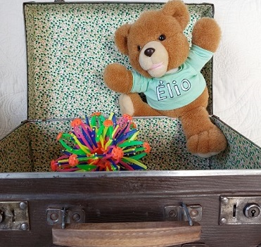

Béatrice Animatrice d'Ateliers Yoga Petite Enfance (18 mois - 3 ans)
Interventions au sein des Relais Petite Enfance,
des crèches, des Maisons d'Assistantes Maternelles
et Ecoles Maternelles à Orléans et son agglomération.

Les bienfaits du yoga chez l'enfant : un moment de détente, d'amusement, de défoulement, mais aussi de concentration, d'équilibre.
L'enfant fait bouger son corps, il le tonifie et le renforce et surtout il va prendre conscience de sa respiration et va apprendre à se relaxer.
Tout cela dans le respect de l'enfant et la bienveillance.

Je viens d'être formée en tant que professeur de yoga pour jeunes enfants
(juin 2022 Formation baby yoga).
Pourquoi avoir fait cette formation?
Suite à une reconversion j'ai obtenu le titre d'assistante de vie aux familles en Juin 2021
(j'étais auparavant technicienne chimiste dans l'industrie pharmaceutique).
Je suis actuellement nounou au domicile des parents et j'adore mon métier.
Et pour ne pas être la nounou lambda j'ai décidé de me former au yoga
pour en faire bénéficier les enfants dont j'ai la garde,
puis j'ai souhaité en faire profiter à d'autres enfants
en intervenant dans les Centres d'Accueil Petite enfance.
Me voilà avec Elio ma mascotte prête à vous rejoindre. N'oubliez pas votre tenue confortable.

Séance à votre domicile. Votre enfant a entre 3 et 5 ans, c'est bientôt son anniversaire, pourquoi pas un atelier yoga pour le fêter avec ses amis ?. A la maison ou dehors selon la saison, une séance pour se défouler, s'amuser et découvrir le yoga. Prévoir pour chaque participant une tenue confortable et une serviette de plage (séance à l'extérieur) ou un tapis (séance à l'intérieur). Je peux fournir des tapis de sol si besoin. La séance d'une durée de 20 a 30 min est prévue pour des groupes de 6 à 7 enfants.

Cours collectifs pour 5 à 6 enfants
(18 mois- 3 ans)
Devis sur demande.
Fréquence : 1 à 2 séances par mois.
Adresse mail : bbpetitsyoga@gmail.com